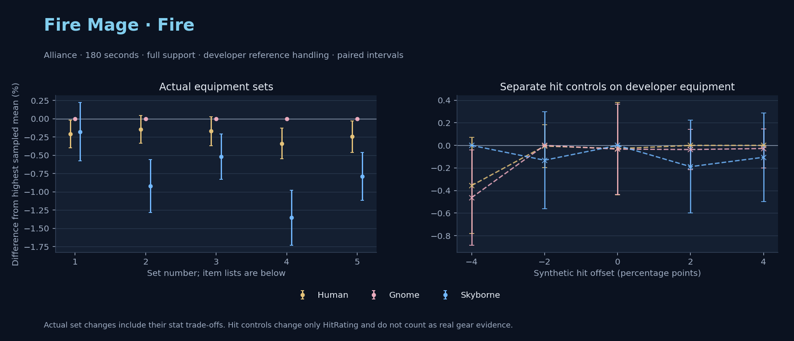

Alliance · Human / Gnome / Skyborne

No pet or guardian appears in the reference combat metrics. Reference: Human, developer equipment, 180 seconds and full support. Pet choices remain those of the developer build.
WoWSims developer · P1 Arcane
Unimplemented enchant or active set effects: [{"id": 181, "pieces": 2, "effects": ["+8 All Resistances."]}, {"id": 181, "pieces": 4, "effects": ["When struck in combat has a 2% chance of freezing the attacker in place for 3s. Can only occur once every 60 sec."]}]
180 seconds, full support and original developer references. Hit below is generic sheet melee / spell hit; school and talent bonuses can be attached directly to spells.
| Race | DPS | Gap and interval | Generic hit | Replay |
|---|---|---|---|---|
| Gnome | 822.48 | +0.000% ± 0.000 | 2.9% / 2.9% | Native input · Website JSON |
| Skyborne | 821.02 | -0.178% ± 0.399 | 2.9% / 2.9% | Native input · Website JSON |
| Human | 820.78 | -0.207% ± 0.191 | 2.9% / 2.9% | Native input · Website JSON |
| Slot | Item | ID | Enchant |
|---|---|---|---|
| Head | Magister's Crown | 16686 | |
| Neck | Gem of Trapped Innocents | 23057 | |
| Shoulder | Sorcerer's Mantle | 226936 | |
| Back | Drape of Vaulted Secrets | 21415 | |
| Chest | Magister's Robes | 16688 | |
| Wrist | Magister's Bindings | 16683 | |
| Hands | Magister's Gloves | 16684 | |
| Waist | Magister's Belt | 16685 | |
| Legs | Magister's Leggings | 16687 | |
| Feet | Magister's Boots | 16682 | |
| Ring 1 | Brilliant Watcher's Signet | 275982 | |
| Ring 2 | Ring of Entropy | 18543 | |
| Trinket 1 | Talisman of Ephemeral Power | 18820 | |
| Trinket 2 | Neltharion's Tear | 19379 | |
| Main hand | Grand Marshal's Mageblade | 23451 | |
| Off hand | Master Dragonslayer's Orb | 19366 | |
| Ranged / relic | Torch of Light | 279246 |
Published ranked alternatives · Published pre-raid
Recorded source replacements: [{"slot": "ranged", "from": 11748, "to": 249237, "publishedAlternativeRank": 1, "publishedEpDelta": -2.2, "reason": "First published alternative compatible with the current WoWSims database, class, faction and occupied slots."}]
180 seconds, full support and original developer references. Hit below is generic sheet melee / spell hit; school and talent bonuses can be attached directly to spells.
| Race | DPS | Gap and interval | Generic hit | Replay |
|---|---|---|---|---|
| Gnome | 854.45 | +0.000% ± 0.000 | 5.9% / 5.9% | Native input · Website JSON |
| Human | 853.21 | -0.145% ± 0.190 | 5.9% / 5.9% | Native input · Website JSON |
| Skyborne | 846.59 | -0.921% ± 0.363 | 5.9% / 5.9% | Native input · Website JSON |
| Slot | Item | ID | Enchant |
|---|---|---|---|
| Head | Sorcerer's Crown | 226935 | Arcanum of Focus |
| Neck | Archlight Talisman | 15856 | Enchant Necklace - Spell Power |
| Shoulder | Mantle of the Timbermaw | 19050 | |
| Back | Arcanoweave Cloak | 272411 | |
| Chest | Sorcerer's Robes | 226932 | Mystic Rugged Armor Kit |
| Wrist | Runecloth Cuffs | 254123 | Enchant Bracer - Greater Spellpower |
| Hands | Sorcerer's Gauntlets | 226930 | Enchant Gloves - Minor Haste |
| Waist | Belt of the Archmage | 18405 | |
| Legs | Magister's Leggings | 16687 | Arcanum of Focus |
| Feet | Sorcerer's Sandals | 226931 | Mystic Rugged Armor Kit |
| Ring 1 | Blessed Band of Light | 272407 | |
| Ring 2 | Channeler's Ring | 272406 | |
| Trinket 1 | Weakness Analyzer | 272438 | |
| Trinket 2 | Uther's Strength | 11302 | |
| Main hand | Sageblade | 22383 | |
| Off hand | Spirit of Aquementas | 11904 | Enchant Off-Hand - Superior Intellect |
| Ranged / relic | Greater Eternal Wand | 249237 |
Published one-slot hit alternative · Published pre-raid
One source-listed alternative; at least 80% of the source slot score retained. Reported hit selects the contrast; only native stats determine simulation outcomes. This is an experimental combination, not an endorsed best set.
Recorded source replacements: [{"slot": "ranged", "from": 11748, "to": 249237, "publishedAlternativeRank": 1, "publishedEpDelta": -2.2, "reason": "First published alternative compatible with the current WoWSims database, class, faction and occupied slots."}]
180 seconds, full support and original developer references. Hit below is generic sheet melee / spell hit; school and talent bonuses can be attached directly to spells.
| Race | DPS | Gap and interval | Generic hit | Replay |
|---|---|---|---|---|
| Gnome | 843.11 | +0.000% ± 0.000 | 4.9% / 4.9% | Native input · Website JSON |
| Human | 841.68 | -0.170% ± 0.200 | 4.9% / 4.9% | Native input · Website JSON |
| Skyborne | 838.72 | -0.521% ± 0.310 | 4.9% / 4.9% | Native input · Website JSON |
| Slot | Item | ID | Enchant |
|---|---|---|---|
| Head | Sorcerer's Crown | 226935 | Arcanum of Focus |
| Neck | Archlight Talisman | 15856 | Enchant Necklace - Spell Power |
| Shoulder | Mantle of the Timbermaw | 19050 | |
| Back | Arcanoweave Cloak | 272411 | |
| Chest | Sorcerer's Robes | 226932 | Mystic Rugged Armor Kit |
| Wrist | Runecloth Cuffs | 254123 | Enchant Bracer - Greater Spellpower |
| Hands | Gloves of Spell Mastery | 14146 | Enchant Gloves - Minor Haste |
| Waist | Belt of the Archmage | 18405 | |
| Legs | Magister's Leggings | 16687 | Arcanum of Focus |
| Feet | Sorcerer's Sandals | 226931 | Mystic Rugged Armor Kit |
| Ring 1 | Blessed Band of Light | 272407 | |
| Ring 2 | Channeler's Ring | 272406 | |
| Trinket 1 | Weakness Analyzer | 272438 | |
| Trinket 2 | Uther's Strength | 11302 | |
| Main hand | Sageblade | 22383 | |
| Off hand | Spirit of Aquementas | 11904 | Enchant Off-Hand - Superior Intellect |
| Ranged / relic | Greater Eternal Wand | 249237 |
Published ranked alternatives · Published pre-raid
Recorded source replacements: [{"slot": "shoulder", "from": 227808, "to": 19050, "publishedAlternativeRank": 1, "publishedEpDelta": -10.7, "reason": "First published alternative compatible with the current WoWSims database, class, faction and occupied slots."}, {"slot": "waist", "from": 228190, "to": 18405, "publishedAlternativeRank": 1, "publishedEpDelta": -12.6, "reason": "First published alternative compatible with the current WoWSims database, class, faction and occupied slots."}]
180 seconds, full support and original developer references. Hit below is generic sheet melee / spell hit; school and talent bonuses can be attached directly to spells.
| Race | DPS | Gap and interval | Generic hit | Replay |
|---|---|---|---|---|
| Gnome | 869.41 | +0.000% ± 0.000 | 6.8% / 6.8% | Native input · Website JSON |
| Human | 866.47 | -0.338% ± 0.211 | 6.8% / 6.8% | Native input · Website JSON |
| Skyborne | 857.62 | -1.356% ± 0.376 | 6.8% / 6.8% | Native input · Website JSON |
| Slot | Item | ID | Enchant |
|---|---|---|---|
| Head | Sorcerer's Crown | 226935 | Arcanum of Focus |
| Neck | Archlight Talisman | 15856 | Enchant Necklace - Spell Power |
| Shoulder | Mantle of the Timbermaw | 19050 | |
| Back | Arcanoweave Cloak | 272411 | |
| Chest | Robe of the Archmage | 14152 | Mystic Rugged Armor Kit |
| Wrist | Runecloth Cuffs | 254123 | Enchant Bracer - Greater Spellpower |
| Hands | Sorcerer's Gauntlets | 226930 | Enchant Gloves - Minor Haste |
| Waist | Belt of the Archmage | 18405 | |
| Legs | Magister's Leggings | 16687 | Arcanum of Focus |
| Feet | Sorcerer's Sandals | 226931 | Mystic Rugged Armor Kit |
| Ring 1 | Blessed Band of Light | 272407 | |
| Ring 2 | Channeler's Ring | 272406 | |
| Trinket 1 | Weakness Analyzer | 272438 | |
| Trinket 2 | Frozen Heart of the Mountain | 249469 | |
| Main hand | Sageblade | 22383 | |
| Off hand | Spirit of Aquementas | 11904 | Enchant Off-Hand - Superior Intellect |
| Ranged / relic | Brilliant Wand | 249385 |
Published one-slot hit alternative · Published pre-raid
One source-listed alternative; at least 80% of the source slot score retained. Reported hit selects the contrast; only native stats determine simulation outcomes. This is an experimental combination, not an endorsed best set.
Recorded source replacements: [{"slot": "shoulder", "from": 227808, "to": 19050, "publishedAlternativeRank": 1, "publishedEpDelta": -10.7, "reason": "First published alternative compatible with the current WoWSims database, class, faction and occupied slots."}, {"slot": "waist", "from": 228190, "to": 18405, "publishedAlternativeRank": 1, "publishedEpDelta": -12.6, "reason": "First published alternative compatible with the current WoWSims database, class, faction and occupied slots."}]
180 seconds, full support and original developer references. Hit below is generic sheet melee / spell hit; school and talent bonuses can be attached directly to spells.
| Race | DPS | Gap and interval | Generic hit | Replay |
|---|---|---|---|---|
| Gnome | 862.86 | +0.000% ± 0.000 | 5.8% / 5.8% | Native input · Website JSON |
| Human | 860.76 | -0.244% ± 0.216 | 5.8% / 5.8% | Native input · Website JSON |
| Skyborne | 856.05 | -0.789% ± 0.327 | 5.8% / 5.8% | Native input · Website JSON |
| Slot | Item | ID | Enchant |
|---|---|---|---|
| Head | Sorcerer's Crown | 226935 | Arcanum of Focus |
| Neck | Archlight Talisman | 15856 | Enchant Necklace - Spell Power |
| Shoulder | Mantle of the Timbermaw | 19050 | |
| Back | Arcanoweave Cloak | 272411 | |
| Chest | Robe of the Archmage | 14152 | Mystic Rugged Armor Kit |
| Wrist | Runecloth Cuffs | 254123 | Enchant Bracer - Greater Spellpower |
| Hands | Gloves of Spell Mastery | 14146 | Enchant Gloves - Minor Haste |
| Waist | Belt of the Archmage | 18405 | |
| Legs | Magister's Leggings | 16687 | Arcanum of Focus |
| Feet | Sorcerer's Sandals | 226931 | Mystic Rugged Armor Kit |
| Ring 1 | Blessed Band of Light | 272407 | |
| Ring 2 | Channeler's Ring | 272406 | |
| Trinket 1 | Weakness Analyzer | 272438 | |
| Trinket 2 | Frozen Heart of the Mountain | 249469 | |
| Main hand | Sageblade | 22383 | |
| Off hand | Spirit of Aquementas | 11904 | Enchant Off-Hand - Superior Intellect |
| Ranged / relic | Brilliant Wand | 249385 |
The same declared pool is available to every race. Each race keeps its best validation-sample set with its screening-selected racial policy. Separate samples confirm that choice, with fresh precision samples near the practical-loss boundary. Gaps use the highest sampled mean under that same duration, support and reference treatment as their reference. A zero reference gap does not certify a race; the main matrix also allows uncertainty in the leader.
| Pool | Seconds | Support | References | Race | DPS | Gap and interval | Racial policies / mana | Selected set | Generic hit: melee / spell | Replay |
|---|---|---|---|---|---|---|---|---|---|---|
| published-pre-raid | 60 | full | developer | Gnome | 898.88 | +0.000% ± 0.00020,000 iterations | developer / developer / developerMana waits 0.0s | published-mage-fire-alliance-316d22c9d0fd5733 | 6.8% / 6.8% | Input · Result · Stats |
| published-pre-raid | 60 | full | developer | Skyborne | 897.58 | -0.145% ± 0.05420,000 iterations | developer / developer / developerMana waits 0.0s | published-mage-fire-alliance-316d22c9d0fd5733 | 6.8% / 6.8% | Input · Result · Stats |
| published-pre-raid | 60 | full | developer | Human | 893.26 | -0.626% ± 0.04120,000 iterations | developer / developer / developerMana waits 0.0s | published-mage-fire-alliance-316d22c9d0fd5733 | 6.8% / 6.8% | Input · Result · Stats |
| published-pre-raid | 60 | full | explicit | Gnome | 898.88 | +0.000% ± 0.00020,000 iterations | developer / developer / developerMana waits 0.0s | published-mage-fire-alliance-316d22c9d0fd5733 | 6.8% / 6.8% | Input · Result · Stats |
| published-pre-raid | 60 | full | explicit | Skyborne | 897.58 | -0.145% ± 0.05420,000 iterations | developer / developer / developerMana waits 0.0s | published-mage-fire-alliance-316d22c9d0fd5733 | 6.8% / 6.8% | Input · Result · Stats |
| published-pre-raid | 60 | full | explicit | Human | 893.26 | -0.626% ± 0.04120,000 iterations | developer / developer / developerMana waits 0.0s | published-mage-fire-alliance-316d22c9d0fd5733 | 6.8% / 6.8% | Input · Result · Stats |
| published-pre-raid | 60 | self | developer | Gnome | 791.73 | +0.000% ± 0.00020,000 iterations | developer / developer / developerMana waits 0.0s | published-mage-fire-alliance-316d22c9d0fd5733 | 6.8% / 6.8% | Input · Result · Stats |
| published-pre-raid | 60 | self | developer | Skyborne | 790.11 | -0.204% ± 0.05220,000 iterations | developer / developer / developerMana waits 0.0s | published-mage-fire-alliance-316d22c9d0fd5733 | 6.8% / 6.8% | Input · Result · Stats |
| published-pre-raid | 60 | self | developer | Human | 786.89 | -0.611% ± 0.04320,000 iterations | developer / developer / developerMana waits 0.0s | published-mage-fire-alliance-316d22c9d0fd5733 | 6.8% / 6.8% | Input · Result · Stats |
| published-pre-raid | 60 | self | explicit | Gnome | 791.73 | +0.000% ± 0.00020,000 iterations | developer / developer / developerMana waits 0.0s | published-mage-fire-alliance-316d22c9d0fd5733 | 6.8% / 6.8% | Input · Result · Stats |
| published-pre-raid | 60 | self | explicit | Skyborne | 790.11 | -0.204% ± 0.05220,000 iterations | developer / developer / developerMana waits 0.0s | published-mage-fire-alliance-316d22c9d0fd5733 | 6.8% / 6.8% | Input · Result · Stats |
| published-pre-raid | 60 | self | explicit | Human | 786.89 | -0.611% ± 0.04320,000 iterations | developer / developer / developerMana waits 0.0s | published-mage-fire-alliance-316d22c9d0fd5733 | 6.8% / 6.8% | Input · Result · Stats |
| published-pre-raid | 180 | full | developer | Gnome | 866.62 | +0.000% ± 0.00020,000 iterations | developer / developer / developerMana waits 0.0s | published-mage-fire-alliance-316d22c9d0fd5733 | 6.8% / 6.8% | Input · Result · Stats · Website JSON |
| published-pre-raid | 180 | full | developer | Human | 864.98 | -0.189% ± 0.04620,000 iterations | developer / developer / developerMana waits 0.0s | published-mage-fire-alliance-316d22c9d0fd5733 | 6.8% / 6.8% | Input · Result · Stats · Website JSON |
| published-pre-raid | 180 | full | developer | Skyborne | 858.04 | -0.990% ± 0.08720,000 iterations | developer / leyline65-guarded / developerMana waits 0.0s | published-mage-fire-alliance-316d22c9d0fd5733 | 6.8% / 6.8% | Input · Result · Stats · Website JSON |
| published-pre-raid | 180 | full | explicit | Gnome | 866.62 | +0.000% ± 0.00020,000 iterations | developer / developer / developerMana waits 0.0s | published-mage-fire-alliance-316d22c9d0fd5733 | 6.8% / 6.8% | Input · Result · Stats |
| published-pre-raid | 180 | full | explicit | Human | 864.98 | -0.189% ± 0.04620,000 iterations | developer / developer / developerMana waits 0.0s | published-mage-fire-alliance-316d22c9d0fd5733 | 6.8% / 6.8% | Input · Result · Stats |
| published-pre-raid | 180 | full | explicit | Skyborne | 858.04 | -0.990% ± 0.08720,000 iterations | developer / leyline65-guarded / developerMana waits 0.0s | published-mage-fire-alliance-316d22c9d0fd5733 | 6.8% / 6.8% | Input · Result · Stats |
| published-pre-raid | 180 | self | developer | Skyborne | 721.17 | +0.000% ± 0.00020,000 iterations | developer / developer / developerMana waits 2.9s | published-mage-fire-alliance-316d22c9d0fd5733 | 6.8% / 6.8% | Input · Result · Stats |
| published-pre-raid | 180 | self | developer | Human | 713.84 | -1.017% ± 0.08720,000 iterations | developer / developer / developerMana waits 5.9s | published-mage-fire-alliance-316d22c9d0fd5733 | 6.8% / 6.8% | Input · Result · Stats |
| published-pre-raid | 180 | self | developer | Gnome | 711.00 | -1.411% ± 0.08920,000 iterations | oncd / developer / developerMana waits 6.8s | published-mage-fire-alliance-316d22c9d0fd5733 | 6.8% / 6.8% | Input · Result · Stats |
| published-pre-raid | 180 | self | explicit | Skyborne | 721.17 | +0.000% ± 0.00020,000 iterations | developer / developer / developerMana waits 2.9s | published-mage-fire-alliance-316d22c9d0fd5733 | 6.8% / 6.8% | Input · Result · Stats |
| published-pre-raid | 180 | self | explicit | Human | 713.84 | -1.017% ± 0.08720,000 iterations | developer / developer / developerMana waits 5.9s | published-mage-fire-alliance-316d22c9d0fd5733 | 6.8% / 6.8% | Input · Result · Stats |
| published-pre-raid | 180 | self | explicit | Gnome | 711.00 | -1.411% ± 0.08920,000 iterations | oncd / developer / developerMana waits 6.8s | published-mage-fire-alliance-316d22c9d0fd5733 | 6.8% / 6.8% | Input · Result · Stats |
| published-pre-raid | 300 | full | developer | Skyborne | 863.88 | +0.000% ± 0.00020,000 iterations | developer / developer / developerMana waits 0.4s | published-mage-fire-alliance-316d22c9d0fd5733 | 6.8% / 6.8% | Input · Result · Stats |
| published-pre-raid | 300 | full | developer | Human | 860.45 | -0.397% ± 0.06120,000 iterations | developer / developer / developerMana waits 0.2s | published-mage-fire-alliance-316d22c9d0fd5733 | 6.8% / 6.8% | Input · Result · Stats |
| published-pre-raid | 300 | full | developer | Gnome | 860.05 | -0.443% ± 0.05920,000 iterations | developer / developer / developerMana waits 0.3s | published-mage-fire-alliance-316d22c9d0fd5733 | 6.8% / 6.8% | Input · Result · Stats |
| published-pre-raid | 300 | full | explicit | Skyborne | 863.88 | +0.000% ± 0.00020,000 iterations | developer / developer / developerMana waits 0.4s | published-mage-fire-alliance-316d22c9d0fd5733 | 6.8% / 6.8% | Input · Result · Stats |
| published-pre-raid | 300 | full | explicit | Human | 860.45 | -0.397% ± 0.06120,000 iterations | developer / developer / developerMana waits 0.2s | published-mage-fire-alliance-316d22c9d0fd5733 | 6.8% / 6.8% | Input · Result · Stats |
| published-pre-raid | 300 | full | explicit | Gnome | 860.05 | -0.443% ± 0.05920,000 iterations | developer / developer / developerMana waits 0.3s | published-mage-fire-alliance-316d22c9d0fd5733 | 6.8% / 6.8% | Input · Result · Stats |
| published-pre-raid | 300 | self | developer | Skyborne | 589.97 | +0.000% ± 0.0005,000 iterations | developer / developer / developerMana waits 67.5s | published-mage-fire-alliance-c8d24b9ad54a19f2 | 5.9% / 5.9% | Input · Result · Stats |
| published-pre-raid | 300 | self | developer | Human | 583.57 | -1.086% ± 0.1885,000 iterations | developer / developer / developerMana waits 72.2s | published-mage-fire-alliance-c8d24b9ad54a19f2 | 5.9% / 5.9% | Input · Result · Stats |
| published-pre-raid | 300 | self | developer | Gnome | 578.04 | -2.022% ± 0.1885,000 iterations | developer / developer / developerMana waits 74.7s | published-mage-fire-alliance-c8d24b9ad54a19f2 | 5.9% / 5.9% | Input · Result · Stats |
| published-pre-raid | 300 | self | explicit | Skyborne | 589.97 | +0.000% ± 0.0005,000 iterations | developer / developer / developerMana waits 67.5s | published-mage-fire-alliance-c8d24b9ad54a19f2 | 5.9% / 5.9% | Input · Result · Stats |
| published-pre-raid | 300 | self | explicit | Human | 583.57 | -1.086% ± 0.1885,000 iterations | developer / developer / developerMana waits 72.2s | published-mage-fire-alliance-c8d24b9ad54a19f2 | 5.9% / 5.9% | Input · Result · Stats |
| published-pre-raid | 300 | self | explicit | Gnome | 578.04 | -2.022% ± 0.1885,000 iterations | developer / developer / developerMana waits 74.7s | published-mage-fire-alliance-c8d24b9ad54a19f2 | 5.9% / 5.9% | Input · Result · Stats |
| developer-reference | 60 | full | developer | Gnome | 855.59 | +0.000% ± 0.00020,000 iterations | developer / developer / developerMana waits 0.0s | developer | 2.9% / 2.9% | Input · Result · Stats |
| developer-reference | 60 | full | developer | Skyborne | 851.76 | -0.449% ± 0.09420,000 iterations | developer / developer / developerMana waits 0.0s | developer | 2.9% / 2.9% | Input · Result · Stats |
| developer-reference | 60 | full | developer | Human | 849.78 | -0.680% ± 0.04320,000 iterations | developer / developer / developerMana waits 0.0s | developer | 2.9% / 2.9% | Input · Result · Stats |
| developer-reference | 60 | full | explicit | Gnome | 855.59 | +0.000% ± 0.00020,000 iterations | developer / developer / developerMana waits 0.0s | developer | 2.9% / 2.9% | Input · Result · Stats |
| developer-reference | 60 | full | explicit | Skyborne | 851.76 | -0.449% ± 0.09420,000 iterations | developer / developer / developerMana waits 0.0s | developer | 2.9% / 2.9% | Input · Result · Stats |
| developer-reference | 60 | full | explicit | Human | 849.78 | -0.680% ± 0.04320,000 iterations | developer / developer / developerMana waits 0.0s | developer | 2.9% / 2.9% | Input · Result · Stats |
| developer-reference | 60 | self | developer | Gnome | 752.82 | +0.000% ± 0.00020,000 iterations | developer / developer / developerMana waits 0.0s | developer | 2.9% / 2.9% | Input · Result · Stats |
| developer-reference | 60 | self | developer | Skyborne | 749.34 | -0.462% ± 0.08920,000 iterations | developer / developer / developerMana waits 0.0s | developer | 2.9% / 2.9% | Input · Result · Stats |
| developer-reference | 60 | self | developer | Human | 747.70 | -0.680% ± 0.04320,000 iterations | developer / developer / developerMana waits 0.0s | developer | 2.9% / 2.9% | Input · Result · Stats |
| developer-reference | 60 | self | explicit | Gnome | 752.82 | +0.000% ± 0.00020,000 iterations | developer / developer / developerMana waits 0.0s | developer | 2.9% / 2.9% | Input · Result · Stats |
| developer-reference | 60 | self | explicit | Skyborne | 749.34 | -0.462% ± 0.08920,000 iterations | developer / developer / developerMana waits 0.0s | developer | 2.9% / 2.9% | Input · Result · Stats |
| developer-reference | 60 | self | explicit | Human | 747.70 | -0.680% ± 0.04320,000 iterations | developer / developer / developerMana waits 0.0s | developer | 2.9% / 2.9% | Input · Result · Stats |
| developer-reference | 180 | full | developer | Gnome | 820.94 | +0.000% ± 0.00020,000 iterations | developer / developer / developerMana waits 0.0s | developer | 2.9% / 2.9% | Input · Result · Stats · Website JSON |
| developer-reference | 180 | full | developer | Skyborne | 820.27 | -0.082% ± 0.09120,000 iterations | developer / developer / developerMana waits 0.0s | developer | 2.9% / 2.9% | Input · Result · Stats · Website JSON |
| developer-reference | 180 | full | developer | Human | 819.94 | -0.122% ± 0.04120,000 iterations | developer / developer / developerMana waits 0.0s | developer | 2.9% / 2.9% | Input · Result · Stats · Website JSON |
| developer-reference | 180 | full | explicit | Gnome | 820.94 | +0.000% ± 0.00020,000 iterations | developer / developer / developerMana waits 0.0s | developer | 2.9% / 2.9% | Input · Result · Stats |
| developer-reference | 180 | full | explicit | Skyborne | 820.27 | -0.082% ± 0.09120,000 iterations | developer / developer / developerMana waits 0.0s | developer | 2.9% / 2.9% | Input · Result · Stats |
| developer-reference | 180 | full | explicit | Human | 819.94 | -0.122% ± 0.04120,000 iterations | developer / developer / developerMana waits 0.0s | developer | 2.9% / 2.9% | Input · Result · Stats |
| developer-reference | 180 | self | developer | Gnome | 684.08 | +0.000% ± 0.00020,000 iterations | developer / developer / developerMana waits 0.3s | developer | 2.9% / 2.9% | Input · Result · Stats |
| developer-reference | 180 | self | developer | Human | 683.85 | -0.035% ± 0.06720,000 iterations | developer / developer / developerMana waits 0.2s | developer | 2.9% / 2.9% | Input · Result · Stats |
| developer-reference | 180 | self | developer | Skyborne | 682.61 | -0.216% ± 0.08920,000 iterations | developer / developer / developerMana waits 0.1s | developer | 2.9% / 2.9% | Input · Result · Stats |
| developer-reference | 180 | self | explicit | Gnome | 684.08 | +0.000% ± 0.00020,000 iterations | developer / developer / developerMana waits 0.3s | developer | 2.9% / 2.9% | Input · Result · Stats |
| developer-reference | 180 | self | explicit | Human | 683.85 | -0.035% ± 0.06720,000 iterations | developer / developer / developerMana waits 0.2s | developer | 2.9% / 2.9% | Input · Result · Stats |
| developer-reference | 180 | self | explicit | Skyborne | 682.61 | -0.216% ± 0.08920,000 iterations | developer / developer / developerMana waits 0.1s | developer | 2.9% / 2.9% | Input · Result · Stats |
| developer-reference | 300 | full | developer | Human | 814.34 | +0.000% ± 0.00020,000 iterations | developer / developer / developerMana waits 0.0s | developer | 2.9% / 2.9% | Input · Result · Stats |
| developer-reference | 300 | full | developer | Skyborne | 814.20 | -0.017% ± 0.07920,000 iterations | developer / developer / developerMana waits 0.0s | developer | 2.9% / 2.9% | Input · Result · Stats |
| developer-reference | 300 | full | developer | Gnome | 813.44 | -0.111% ± 0.04620,000 iterations | developer / developer / developerMana waits 0.0s | developer | 2.9% / 2.9% | Input · Result · Stats |
| developer-reference | 300 | full | explicit | Human | 814.34 | +0.000% ± 0.00020,000 iterations | developer / developer / developerMana waits 0.0s | developer | 2.9% / 2.9% | Input · Result · Stats |
| developer-reference | 300 | full | explicit | Skyborne | 814.20 | -0.017% ± 0.07920,000 iterations | developer / developer / developerMana waits 0.0s | developer | 2.9% / 2.9% | Input · Result · Stats |
| developer-reference | 300 | full | explicit | Gnome | 813.44 | -0.111% ± 0.04620,000 iterations | developer / developer / developerMana waits 0.0s | developer | 2.9% / 2.9% | Input · Result · Stats |
| developer-reference | 300 | self | developer | Skyborne | 591.50 | +0.000% ± 0.0005,000 iterations | developer / developer / developerMana waits 55.6s | developer | 2.9% / 2.9% | Input · Result · Stats |
| developer-reference | 300 | self | developer | Human | 586.05 | -0.922% ± 0.2125,000 iterations | developer / developer / developerMana waits 59.8s | developer | 2.9% / 2.9% | Input · Result · Stats |
| developer-reference | 300 | self | developer | Gnome | 579.62 | -2.009% ± 0.2105,000 iterations | developer / developer / developerMana waits 62.3s | developer | 2.9% / 2.9% | Input · Result · Stats |
| developer-reference | 300 | self | explicit | Skyborne | 591.50 | +0.000% ± 0.0005,000 iterations | developer / developer / developerMana waits 55.6s | developer | 2.9% / 2.9% | Input · Result · Stats |
| developer-reference | 300 | self | explicit | Human | 586.05 | -0.922% ± 0.2125,000 iterations | developer / developer / developerMana waits 59.8s | developer | 2.9% / 2.9% | Input · Result · Stats |
| developer-reference | 300 | self | explicit | Gnome | 579.62 | -2.009% ± 0.2105,000 iterations | developer / developer / developerMana waits 62.3s | developer | 2.9% / 2.9% | Input · Result · Stats |
180 seconds, full support and the developer equipment anchor. These checks test creature sensitivity without a full gear search.
| Target | References | Race | DPS | Gap and interval | Replay |
|---|---|---|---|---|---|
| beast | developer | Skyborne | 821.02 | +0.000% ± 0.000 | Input · Result |
| beast | developer | Human | 820.78 | -0.029% ± 0.408 | Input · Result |
| beast | developer | Gnome | 820.75 | -0.033% ± 0.400 | Input · Result |
| beast | explicit | Skyborne | 821.02 | +0.000% ± 0.000 | Input · Result |
| beast | explicit | Human | 820.78 | -0.029% ± 0.408 | Input · Result |
| beast | explicit | Gnome | 820.75 | -0.033% ± 0.400 | Input · Result |
| elemental | developer | Skyborne | 862.07 | +0.000% ± 0.000 | Input · Result |
| elemental | developer | Human | 820.78 | -4.790% ± 0.389 | Input · Result |
| elemental | developer | Gnome | 820.75 | -4.794% ± 0.381 | Input · Result |
| elemental | explicit | Skyborne | 862.07 | +0.000% ± 0.000 | Input · Result |
| elemental | explicit | Human | 820.78 | -4.790% ± 0.389 | Input · Result |
| elemental | explicit | Gnome | 820.75 | -4.794% ± 0.381 | Input · Result |
Some equipment has unimplemented enchant or set effects
These known-issue notes are source context. Runtime checks establish current cast coverage, including Mutilate. They do not prove every mechanic matches the game.